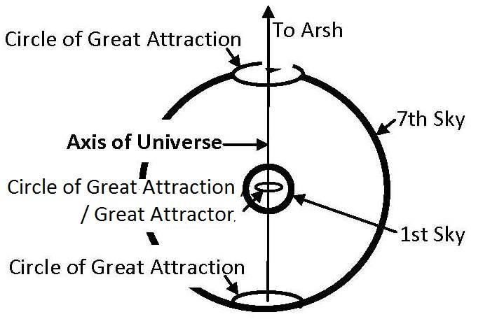

He made for you, from yourselves, pairs (azwajan) and pairs (azwajan) among cattle—by this means He multiplies you. There is nothing whatsoever like unto Him, and He is the One that hears and sees. To Him belongs the keys of the Skies and Lands; He enlarges and restricts the sustenance to whom He will; for He knows full well all things.
তিনি তোমাদের জন্য তোমাদের নিজেদের থেকে জোড়া (আজওয়াজান) এবং চতুষ্পদ জন্তুদের মধ্যে জোড়া (আজওয়াজান) তৈরি করেছেন- এর মাধ্যমে তিনি তোমাদের সংখ্যাবৃদ্ধি করেন। তাঁর অনুরূপ কিছুই নেই এবং তিনিই শোনেন ও দেখেন। আকাশ ও জমিনের চাবি তাঁরই। তিনি যাকে ইচ্ছা রিযিক বাড়িয়ে দেন এবং সীমিত করেন; কারণ তিনি সব বিষয়েই ভালো জানেন।
Remarks:
মন্তব্য:
In the above verses, the term 'Pairs' (azwajan) does not refer to married couples—cattle do not marry. It refers to the 'Pairs' by which both we and the cattle are multiplied, as the verses state: ―He made for you, from yourselves, pairs and pairs among cattle—by this means He multiplies you.‖ Here, ―He made for you, from yourselves, pairs (azwajan)…‖ means that He creates the special double helix DNA molecules of sperm and ovum with hereditary and other traits, as the subsequent verse says: ―…by this means He multiplies you.‖ A specific genome code is produced after the fusion of a sperm and an ovum. This code dictates the formation of the body, including hereditary and other traits. FIGURE 42.2

চিত্র 42_2 / Figure 42_2
উপরের আয়াতগুলিতে, 'জোড়া' (আজওয়াজান) শব্দটি বিবাহিত দম্পতিদের বোঝায় না - গবাদি পশুরা বিয়ে করে না। এটি সেই 'জোড়া'কে নির্দেশ করে যার দ্বারা আমরা এবং গবাদিপশু উভয়ই গুণিত, যেমন আয়াতে বলা হয়েছে: "তিনি তোমাদের জন্য তৈরি করেছেন, তোমাদের নিজেদের থেকেই, জোড়া এবং জোড়া গবাদিপশুদের মধ্যে - এর মাধ্যমে তিনি তোমাদেরকে গুন করেছেন৷" এখানে, "তিনি তোমাদের জন্য তৈরি করেছেন, তোমাদের থেকে, জোড়া (আজওয়াজান)..." এর অর্থ হল তিনি দ্বিগুণ স্পেশাল ডিসপার এবং কুলিসপার ডুবল। বংশগত এবং অন্যান্য বৈশিষ্ট্যের সাথে, যেমন পরবর্তী আয়াতটি বলে: "...এর মাধ্যমে তিনি আপনাকে সংখ্যাবৃদ্ধি করেন।" শুক্রাণু এবং ডিম্বাণুর সংমিশ্রণের পরে একটি নির্দিষ্ট জিনোম কোড তৈরি করা হয়। এই কোড বংশগত এবং অন্যান্য বৈশিষ্ট্য সহ শরীরের গঠন নির্দেশ করে। চিত্র 42.2
চিত্র 42_2 / Figure 42_2
A sperm is produced with 23 haploid chromosomes. Once a sperm enters an ovum, it releases its genetic material. A new membrane forms around the genetic material, where the haploid chromosomes prepare to combine. Being awakened by fertilization, egg‘s chromosomes are readied to combine with the sperm's 23 haploid chromosomes.
একটি শুক্রাণু 23 টি হ্যাপ্লয়েড ক্রোমোজোম দিয়ে উত্পাদিত হয়। একবার একটি শুক্রাণু একটি ডিম্বাণু প্রবেশ করে, এটি তার জেনেটিক উপাদান প্রকাশ করে। জেনেটিক উপাদানের চারপাশে একটি নতুন ঝিল্লি তৈরি হয়, যেখানে হ্যাপ্লয়েড ক্রোমোজোমগুলি একত্রিত হওয়ার জন্য প্রস্তুত হয়। নিষিক্তকরণের মাধ্যমে জাগ্রত হওয়ার ফলে, ডিমের ক্রোমোজোমগুলি শুক্রাণুর 23টি হ্যাপ্লয়েড ক্রোমোজোমের সাথে একত্রিত হওয়ার জন্য প্রস্তুত হয়।
FIGURE 42.3: Formation of Zygote Then the membranes break down to allow the male and female genetic material to combine. The chromosomes then become part of a single nucleus containing a full set of chromosomes (23 pairs of diploid chromosomes). During the fusion of male and female chromosomes, the specific genetic code of a human is formed, which determines the traits such as gender, eye color, hair color, and so forth. Allah guides the formation of haploid chromosomes through processes like chromosome crossover and other mechanisms, as the verses under discussion state: He made for you, from yourselves, pairs (azwajan) and pairs among cattle—by this means He multiplies you. There is nothing whatsoever like unto Him, and He is the One that hears and sees. The Haploid Chromosomes carry heredity:

চিত্র 42_3 / Figure 42_3
চিত্র 42.3: জাইগোট গঠন তারপর পুরুষ এবং মহিলা জেনেটিক উপাদান একত্রিত করার জন্য ঝিল্লি ভেঙ্গে যায়। ক্রোমোজোমগুলি তখন একটি একক নিউক্লিয়াসের অংশে পরিণত হয় যাতে ক্রোমোজোমের সম্পূর্ণ সেট থাকে (23 জোড়া ডিপ্লয়েড ক্রোমোজোম)। পুরুষ এবং মহিলা ক্রোমোজোমের সংমিশ্রণের সময়, একজন মানুষের নির্দিষ্ট জেনেটিক কোড তৈরি হয়, যা লিঙ্গ, চোখের রঙ, চুলের রঙ ইত্যাদির মতো বৈশিষ্ট্যগুলি নির্ধারণ করে। আল্লাহ ক্রোমোজোম ক্রসওভার এবং অন্যান্য প্রক্রিয়ার মতো প্রক্রিয়ার মাধ্যমে হ্যাপ্লয়েড ক্রোমোজোম গঠনের নির্দেশনা দেন, যেমন আলোচনার অধীন আয়াতে বলা হয়েছে: তিনি তোমাদের জন্য তৈরি করেছেন, তোমাদের থেকে জোড়া (আজওয়াজান) এবং গবাদি পশুদের মধ্যে জোড়া-এর মাধ্যমে তিনি তোমাদের সংখ্যাবৃদ্ধি করেন। তাঁর অনুরূপ কিছুই নেই এবং তিনিই শোনেন ও দেখেন। হ্যাপ্লয়েড ক্রোমোজোম বংশগতি বহন করে:
চিত্র 42_3 / Figure 42_3
―The One Who made good everything He created (by guided evolution), and He began the creation of man (Adam) with tinin (gene expression). Then He made his progeny from the heredity (carried by Haploid Chromosomes of sperms) of despised fluid‖ [Al Quran 32:7-8]
- যিনি সৃষ্টি করেছেন তার সবকিছুই ভালো করেছেন (নির্দেশিত বিবর্তনের মাধ্যমে), এবং তিনি টিনিন (জিন এক্সপ্রেশন) দিয়ে মানুষের (আদম) সৃষ্টি শুরু করেছিলেন। অতঃপর তিনি ঘৃণ্য তরলের বংশগতি (শুক্রাণুর হ্যাপ্লয়েড ক্রোমোজোম দ্বারা বহন) থেকে তার বংশধর তৈরি করেন” [আল কুরআন 32:7-8]
Some offspring are stronger, more intelligent, or taller than others. Similarly, some races excel in traits like intelligence, courage, and stature, such as the Persians, Japanese, Germans, French, British, Spanish, Jews, Turks, and a few others who show higher traits than other races. However, this does not mean that they have become the Awliya (Guiding Friends and Protectors) of mankind. Allah is the true Awliya. Allah has the power to improve generations within any race, making them superior to others. If one reads history, they will find that at times a few intelligent and courageous generations within a race have risen to greatness. For example, during the First and Second World Wars, a few intelligent, brave, and dynamic generations emerged in Germany. They rapidly developed advanced armaments and defeated all European countries, including the superpowers of the time, Britain and France. In this context, the verses mean that all races within the Muslim Ummah should be honored equally. If an Arab is leading, a Persian should obey. Some seeds produce a better harvest. Allah controls the production through the Pairs (Double Helix DNA Molecules) to create better seeds. Thus, the verses in the last paragraph say: ―To Him belongs the keys of the Skies and Lands; He enlarges and restricts the sustenance to whom He will; for He knows full well all things.‖ The example of plants is given so that the people of earlier times could relate. Allah forms the seeds of humans in the ovaries of their mothers.
কিছু সন্তান অন্যদের চেয়ে শক্তিশালী, আরও বুদ্ধিমান বা লম্বা হয়। একইভাবে, কিছু জাতি বুদ্ধিমত্তা, সাহসিকতা এবং উচ্চতার মতো বৈশিষ্ট্যে উৎকৃষ্ট, যেমন পারস্য, জাপানি, জার্মান, ফরাসি, ব্রিটিশ, স্প্যানিশ, ইহুদি, তুর্কি এবং আরও কয়েকজন যারা অন্যান্য জাতিগুলির তুলনায় উচ্চতর বৈশিষ্ট্য দেখায়। যাইহোক, এর অর্থ এই নয় যে তারা মানবজাতির আউলিয়া (পথপ্রদর্শক বন্ধু এবং রক্ষাকারী) হয়ে উঠেছে। আল্লাহই প্রকৃত আউলিয়া। আল্লাহ যে কোন জাতির মধ্যে প্রজন্মকে উন্নত করার ক্ষমতা রাখেন, তাদেরকে অন্যদের থেকে শ্রেষ্ঠ করে তোলেন। কেউ যদি ইতিহাস পড়ে, তবে তারা দেখতে পাবে যে কখনও কখনও একটি জাতির মধ্যে কয়েকটি বুদ্ধিমান এবং সাহসী প্রজন্ম মহানতায় উঠেছে। উদাহরণস্বরূপ, প্রথম এবং দ্বিতীয় বিশ্বযুদ্ধের সময়, জার্মানিতে কয়েকটি বুদ্ধিমান, সাহসী এবং গতিশীল প্রজন্মের আবির্ভাব হয়েছিল। তারা দ্রুত উন্নত অস্ত্রশস্ত্র তৈরি করে এবং তৎকালীন পরাশক্তি ব্রিটেন ও ফ্রান্সসহ ইউরোপের সব দেশকে পরাজিত করে। এই প্রেক্ষাপটে, আয়াতের অর্থ হল মুসলিম উম্মাহর সকল জাতিকে সমানভাবে সম্মানিত করা উচিত। যদি একজন আরব নেতৃত্ব দেয় তবে একজন পারস্যের আনুগত্য করা উচিত। কিছু বীজ একটি ভাল ফসল উত্পাদন. আল্লাহ আরও ভালো বীজ তৈরি করার জন্য পেয়ারের (ডাবল হেলিক্স ডিএনএ অণু) মাধ্যমে উৎপাদন নিয়ন্ত্রণ করেন। সুতরাং, শেষ অনুচ্ছেদের আয়াতগুলি বলে: “আকাশ ও জমিনের চাবি তাঁরই কাছে; তিনি যাকে ইচ্ছা রিযিক বাড়িয়ে দেন এবং সীমিত করেন; কারণ তিনি সব বিষয়েই ভালোভাবে জানেন।'' উদ্ভিদের উদাহরণ দেওয়া হয়েছে যাতে আগের যুগের মানুষ সম্পর্ক করতে পারে। আল্লাহ মানুষের বীজ তাদের মায়ের ডিম্বাশয়ে গঠন করেন।
Section 5 of Chapter 42 [Verse 13-14]: Examples of the Old
অধ্যায় 42 এর অধ্যায় 5 [পদ 13-14]: পুরানো উদাহরণ
The same religion has He established for you as that which He enjoined on Noah, that which We have sent by inspiration to thee, and that which We enjoined on Abraham, Moses and Jesus—to establish the religion, and not to be divided therein. To those who worship other things than Allah, hard is it to which thou call them. Allah chooses to Himself those whom He pleases, and guides to Himself those who turn. And they became divided, only after knowledge reached them, through selfish envy between themselves. Had it not been for a word that went forth before from thy Lord to a term appointed, the matter would have been settled between them. But truly those who have inherited the book after them are in suspicious doubt concerning it.
তিনি তোমাদের জন্য একই দ্বীন প্রতিষ্ঠা করেছেন যা তিনি নূহকে নির্দেশ দিয়েছিলেন, যেটি আমি আপনার কাছে প্রেরণ করেছি এবং যা আমরা ইবরাহীম, মূসা ও ঈসাকে নির্দেশ দিয়েছিলাম - দ্বীন প্রতিষ্ঠা করার জন্য এবং তাতে বিভক্ত না হওয়ার জন্য। যারা আল্লাহ ব্যতীত অন্য কিছুর ইবাদত করে, তাদের জন্য আপনি তাদের আহ্বান করা কঠিন। আল্লাহ যাকে চান নিজের জন্য মনোনীত করেন এবং যারা ফেরে তাদের নিজের দিকে পরিচালিত করেন। এবং তারা বিভক্ত হয়ে পড়ে, জ্ঞান তাদের কাছে পৌঁছানোর পরেই, নিজেদের মধ্যে স্বার্থপর হিংসার কারণে। যদি আপনার পালনকর্তার পক্ষ থেকে একটি নির্দিষ্ট মেয়াদ পর্যন্ত পূর্ববর্তী কোনো কথা না থাকত, তবে তাদের মধ্যে বিষয়টি মীমাংসা হয়ে যেত। কিন্তু প্রকৃতপক্ষে যারা তাদের পরে কিতাবের উত্তরাধিকারী হয়েছে তারা এর ব্যাপারে সন্দেহজনক সন্দেহের মধ্যে রয়েছে।
Remarks:
মন্তব্য:
The above verses identify the cause of division as ―selfish envy between themselves‖. After Solomon, the Jews experienced internal conflicts, and the kingdom was divided. Subsequently, they split into many religious sects, with religious leaders preaching different ideologies based on varying interpretations and explanations of the Torah and concocted Talmud. Christians are also divided into Catholics, Protestants, and Orthodox, with other minor sects. The Orthodox are dominant in Eastern Europe and Russia; Catholics are dominant in Western Europe, except for England; and Protestants are predominant in America and Australia.
উপরোক্ত আয়াতগুলো বিভক্তির কারণকে 'নিজেদের মধ্যে স্বার্থপর হিংসা' হিসেবে চিহ্নিত করে। সলোমনের পরে, ইহুদিরা অভ্যন্তরীণ দ্বন্দ্বের সম্মুখীন হয়েছিল এবং রাজ্যটি বিভক্ত হয়েছিল। পরবর্তীকালে, তারা অনেক ধর্মীয় সম্প্রদায়ে বিভক্ত হয়ে পড়ে, যেখানে ধর্মীয় নেতারা তালমুড এবং তালমুদের বিভিন্ন ব্যাখ্যা এবং ব্যাখ্যার উপর ভিত্তি করে বিভিন্ন মতাদর্শ প্রচার করে। খ্রিস্টানরাও অন্যান্য ক্ষুদ্র সম্প্রদায়ের সাথে ক্যাথলিক, প্রোটেস্ট্যান্ট এবং অর্থোডক্সে বিভক্ত। পূর্ব ইউরোপ এবং রাশিয়ায় অর্থোডক্স প্রভাবশালী; ইংল্যান্ড ছাড়া পশ্চিম ইউরোপে ক্যাথলিকদের প্রাধান্য রয়েছে; এবং প্রোটেস্ট্যান্টরা আমেরিকা এবং অস্ট্রেলিয়ায় প্রধান।
―From those, too, who call themselves Christians, We did take a covenant, but they forgot a good part of the message that was sent them: so we estranged them with enmity and hatred between the one and the other to the Day of Judgment. And soon will God show them what it is they have done.‖ [Al Quran 5:14]
- যারা নিজেদেরকে খ্রিস্টান বলে, তাদের কাছ থেকেও আমরা একটি অঙ্গীকার নিয়েছিলাম, কিন্তু তারা তাদের পাঠানো বাণীর একটি ভাল অংশ ভুলে গিয়েছিল: তাই আমরা তাদের একে অপরের মধ্যে শত্রুতা ও বিদ্বেষ নিয়ে বিচার দিবস পর্যন্ত বিচ্ছিন্ন করে রেখেছি। এবং শীঘ্রই আল্লাহ তাদের দেখাবেন যে তারা কি করেছে।" [আল কুরআন 5:14]
Political and Religious Leaders divided the people for selfish envy between themselves.
রাজনৈতিক ও ধর্মীয় নেতারা নিজেদের মধ্যে স্বার্থপর হিংসার জন্য জনগণকে বিভক্ত করেছেন।
Section 6 of Chapter 42 [Verse 15-16]: Follow only the Quran to remain United
অধ্যায় 42 এর অধ্যায় 6 [আয়াত 15-16]: ঐক্যবদ্ধ থাকার জন্য শুধুমাত্র কুরআন অনুসরণ করুন
Now, then, for that call and stand steadfast as thou are commanded, and do not follow thou their vain desire, but say: "I believe in the Book, which Allah has sent down; and I am commanded to judge justly between you. Allah is our Lord and your Lord, for us our deeds, and for you your deeds. There is no contention between you and us; Allah will bring us together, and to Him is final goal."
এখন, তাহলে সেই আহ্বানের জন্য এবং আপনাকে যেভাবে আদেশ করা হয়েছে সেভাবে অবিচল থাকুন এবং তাদের নিরর্থক ইচ্ছার অনুসরণ করবেন না, বরং বলুন: "আমি আল্লাহর নাযিলকৃত কিতাবের প্রতি বিশ্বাস রাখি; এবং আমি তোমাদের মধ্যে ন্যায়বিচার করতে আদেশ করেছি। আল্লাহ আমাদের পালনকর্তা এবং তোমাদের প্রতিপালক, আমাদের জন্য আমাদের কাজ এবং তোমাদের জন্য তোমাদের কাজ। তোমাদের এবং আমাদের মধ্যে কোন বিরোধ নেই, আমাদের এবং আল্লাহ তায়ালাকে একত্রিত করার লক্ষ্যে চূড়ান্ত হবেন।"
Remarks:
মন্তব্য:
The main reasons for sectarian divides (firqa) among Muslims are Hadith and Fiqh. But these are not necessarily part of our religion, as the above verses say: ―Now, then, for that call and stand steadfast as thou are commanded, and do not follow thou their vain desire, but say: "I believe in the Book, which Allah has sent down‖. The Book which Allah has sent down is the Quran and the Quran only. However, other books such as Sirat (Biography) of Prophet Muhammad (pbuh), the books of the Hadiths, Prophet‘s (pbuh) biography, Holy Bible, Geography, early Islamic history, modern science, and so on, can be read for understanding the Quran, but should not be followed as religion. If Muslims would follow only the Quran, there would be no division (Firqa) among them. A Muslim should judge according to the Quran in cases where punishments for the crimes are specified. The crimes for which punishments are suggested in the Quran include adultery, theft, spreading false accusation against a woman, creating disorder in society, and in cases riba. If the punishment for a crime is not mentioned in the Quran, a Muslim should judge justly, as the verses under discussion say: ―…say: I believe in the Book, which Allah has sent down, and I am commanded to judge justly between you…‖ Punishing a person for an offence is not a religious obligation if punishment of the offence is not mentioned in the Quran. For example, the Quran does not mention any punishment for drinking wine or breaking hijab. So, punishing for drinking wine or breaking hijab are not religious obligations. However, if a leadership does it justly, it may be considered as his good deed. A Leader or a Parliament should avoid prescribing capital punishment for such offences.
মুসলমানদের মধ্যে সাম্প্রদায়িক বিভাজনের (ফিরকা) প্রধান কারণ হল হাদীস ও ফিকহ। কিন্তু এগুলি অবশ্যই আমাদের ধর্মের অংশ নয়, যেমন উপরের আয়াতগুলি বলে: "এখন, সেই আহ্বানের জন্য এবং আপনাকে যেভাবে আদেশ করা হয়েছে সেভাবে অবিচল থাকুন, এবং আপনি তাদের নিরর্থক আকাঙ্ক্ষার অনুসরণ করবেন না, বরং বলুন: "আমি বিশ্বাস করি যে কিতাবটি আল্লাহ নাযিল করেছেন"। আল্লাহ যে কিতাব নাজিল করেছেন তা হল কুরআন এবং অন্যান্য কিতাব যেমন মুহাম্মাদ (সাল্লাল্লাহু আলাইহি ওয়া সাল্লাম)। (সা.), হাদিসের বই, পবিত্র বাইবেল, ভূগোল, ইসলামের আদি ইতিহাস, আধুনিক বিজ্ঞান ইত্যাদি পাঠ করা যেতে পারে, তবে মুসলমানরা যদি কেবল কুরআনকে অনুসরণ করে তবে তাদের মধ্যে কোন বিভাজন (ফিরকা) থাকবে না যেখানে অপরাধের জন্য বিচার করা উচিত কুরআনে ব্যভিচার, চুরি, নারীর বিরুদ্ধে মিথ্যা অভিযোগ ছড়ানো, সমাজে বিশৃঙ্খলা সৃষ্টি করা এবং সুদের ক্ষেত্রে কোনো অপরাধের শাস্তির কথা কুরআনে উল্লেখ না থাকলে একজন মুসলমানকে ন্যায়সঙ্গতভাবে বিচার করা উচিত, যেমন আলোচনার আয়াতে বলা হয়েছে: "...বলুন: আমি সেই কিতাবে বিশ্বাস করি, যা আল্লাহ নাযিল করেছেন" এবং আমি একজন ব্যক্তিকে বিচার করার জন্য আদেশ করেছি। কোন ধর্মীয় বাধ্যবাধকতা যদি কুরআনে উল্লেখ না থাকে, যেমন, মদ পান করা বা হিজাব ভঙ্গ করার জন্য কোন শাস্তির কথা বলা হয়নি, তবে যদি কোন নেতৃত্ব এটিকে ন্যায়সঙ্গতভাবে করে, তাহলে তা তার জন্য একটি পুঁজি হিসেবে বিবেচনা করা উচিত অপরাধ
But those who argue concerning Allah, after response has been made to Him, futile is their argument in the sight of their Lord; on them is wrath, and for them will be a penalty terrible.
কিন্তু যারা আল্লাহ সম্পর্কে বিতর্ক করে, তাঁর কাছে সাড়া দেওয়ার পর, তাদের রবের কাছে তাদের যুক্তি নিরর্থক। তাদের উপর গজব রয়েছে এবং তাদের জন্য রয়েছে ভয়াবহ শাস্তি।
Section 7 of Chapter 42 [Verse 17-18]: Sign of Doomsday
অধ্যায় 42 এর অধ্যায় 7 [পদ 17-18]: কেয়ামতের চিহ্ন
It is Allah Who has sent down the Book in Truth and the Balance; and what will make thee realize that perhaps the Hour is close at hand? Only those wish to hasten it who believe not in it. Those who believe hold it in awe and know that it is the Truth. Behold, verily those that dispute concerning the Hour are far astray.
আল্লাহই সত্য ও ভারসাম্যপূর্ণ কিতাব নাযিল করেছেন; এবং কি আপনাকে উপলব্ধি করবে যে সম্ভবত কেয়ামত নিকটবর্তী? শুধুমাত্র তারাই তা ত্বরান্বিত করতে চায় যারা এতে বিশ্বাস করে না। যারা বিশ্বাস করে তারা এটাকে ভয়ে ধরে রাখে এবং জানে যে এটা সত্য। দেখ, যারা কেয়ামত সম্পর্কে বিতর্ক করে তারা নিশ্চয়ই পথভ্রষ্ট।
Remarks:
মন্তব্য:
The Hour is close at hand, but we cannot perceive it due to the design and evolution of the universe.
কেয়ামত কাছাকাছি, কিন্তু মহাবিশ্বের নকশা এবং বিবর্তনের কারণে আমরা তা উপলব্ধি করতে পারি না।
FIGURE 42.4: First and Second Skies depicting overall design of the Universe We do not know the large-scale structure of the universe or the true current status of distant galaxies. When we observe a galaxy five billion light-years away, we are observing it as it was five billion years ago, not as it is now. The Quran gives an idea of the Universe to comprehend the Dooms Day and after life. The space of the universe is organized into seven spherical waves, one inside another, like the layers of an onion. These waves of space are skies. There are seven skies, and in each sky, there are many galaxies. See figure above. The rotation of left-handed and right-handed galaxies suggests that the universe may be rotating and could have an axis.

চিত্র 42_4 / Figure 42_4
চিত্র 42.4: মহাবিশ্বের সামগ্রিক নকশা চিত্রিত প্রথম এবং দ্বিতীয় আকাশ আমরা মহাবিশ্বের বিশাল আকারের কাঠামো বা দূরবর্তী ছায়াপথগুলির প্রকৃত বর্তমান অবস্থা জানি না। আমরা যখন পাঁচ বিলিয়ন আলোকবর্ষ দূরে একটি গ্যালাক্সি পর্যবেক্ষণ করি, তখন আমরা এটিকে পাঁচ বিলিয়ন বছর আগে যেমনটি পর্যবেক্ষণ করি, এখনকার মতো নয়। কিয়ামতের দিন এবং পরবর্তী জীবন বোঝার জন্য কুরআন মহাবিশ্বের একটি ধারণা দেয়। মহাবিশ্বের স্থানটি সাতটি গোলাকার তরঙ্গে সংগঠিত, একটি পেঁয়াজের স্তরের মতো আরেকটির ভিতরে। মহাকাশের এই তরঙ্গগুলি আকাশ। সাতটি আকাশ রয়েছে এবং প্রতিটি আকাশে অনেকগুলি ছায়াপথ রয়েছে। উপরের চিত্র দেখুন। বাম-হাতে এবং ডান-হাতে গ্যালাক্সিগুলির ঘূর্ণন পরামর্শ দেয় যে মহাবিশ্ব ঘূর্ণায়মান হতে পারে এবং এর একটি অক্ষ থাকতে পারে।
চিত্র 42_4 / Figure 42_4
FIGURE 42.5: Axis of the Universe

চিত্র 42_5 / Figure 42_5
চিত্র 42.5: মহাবিশ্বের অক্ষ
চিত্র 42_5 / Figure 42_5
We are located in the First (Innermost) Sky. The Great Attractor appears to be at the center of the First Sky, and it is likely a point on the universal axis. The galaxies of the First Sky are rotating around the axis and drifting toward the Great Attractor. The galaxies of the outer Skies also rotate around the same axis, but they are drifting toward the central sphere of their respective Skies. Meanwhile, the universe as a whole is contracting in diameter. Thus, the universe is contracting by rolling up the expanding space. Therefore, the universe is in a state of balance. In the spinning universe, the belts of voids are being cleared as the walls are drawing the filaments in. The spin of the Universe has been increasing from the outermost sky for about past five billion years. Thus, the outer skies are collapsing into the inner skies one after another. Soon, the Second Sky will be overtaken by the falling Third Sky, and the space of the First Sky will detach from the overall universe. The rotation of the First Sky will then slow down, and it will lose its alignment with the overall order of the universe. The verses under discussion describe the current state of balance—the compact walls, the vast voids, and the flimsy filaments inform us that the Doomsday is near. We are in the First (Innermost) Sky, and we do not feel the rotation of the galaxies around the Axis of the Universe. We only observe their drift toward the Great Attractor. Soon, the rotational velocity of the First Sky will slow down, while the drifting motion will shift to direct motion, and the speed of contraction will increase. Then the Arrows of Time will reverse in the First Sky, the Sun will rise from the west, child birth will stop, people will start remembering the future, and there will be about 40 years left before the Trumpet is blown. Due to the violent blow of the Trumpet, the First Sky will explode, rejoining the overall universe. Humans will die. Over time, all the Skies (Universe) will compact into a Singularity (Big Crunch). Thus, the universe will become a bright point on the Face of God. The Face of God refers to 'His face of nafs,' composed of the force fields (ruhs) of His nafs, which radiate through 'His face in form.' The universe will be reprogrammed and reinitiated by Allah for Resurrection, Judgment, Salvation, and onward evolution. [The matter is deliberately discussed with references in Section-7 of Chapter-30]
আমরা প্রথম (অন্তঃস্থ) আকাশে অবস্থিত। গ্রেট অ্যাট্রাক্টর প্রথম আকাশের কেন্দ্রে রয়েছে বলে মনে হয় এবং এটি সম্ভবত সর্বজনীন অক্ষের একটি বিন্দু। প্রথম আকাশের গ্যালাক্সিগুলি অক্ষের চারপাশে ঘুরছে এবং গ্রেট অ্যাট্রাক্টরের দিকে প্রবাহিত হচ্ছে। বাইরের আকাশের ছায়াপথগুলিও একই অক্ষের চারপাশে ঘুরছে, কিন্তু তারা তাদের নিজ নিজ আকাশের কেন্দ্রীয় গোলকের দিকে প্রবাহিত হচ্ছে। এদিকে, সমগ্র মহাবিশ্ব ব্যাসে সংকুচিত হচ্ছে। এইভাবে, মহাবিশ্ব প্রসারিত স্থানকে রোল আপ করে সংকুচিত হচ্ছে। অতএব, মহাবিশ্ব ভারসাম্যপূর্ণ অবস্থায় রয়েছে। ঘূর্ণায়মান মহাবিশ্বে, শূন্যতার বেল্টগুলি পরিষ্কার করা হচ্ছে কারণ দেয়ালগুলি ফিলামেন্টগুলিকে আঁকছে৷ প্রায় পাঁচ বিলিয়ন বছর ধরে মহাবিশ্বের ঘূর্ণন বাইরের আকাশ থেকে বৃদ্ধি পাচ্ছে৷ এভাবে বাইরের আকাশ একের পর এক ভেতরের আকাশে ভেঙ্গে পড়ছে। শীঘ্রই, দ্বিতীয় আকাশ পতনশীল তৃতীয় আকাশকে অতিক্রম করবে এবং প্রথম আকাশের স্থান সামগ্রিক মহাবিশ্ব থেকে বিচ্ছিন্ন হয়ে যাবে। প্রথম আকাশের ঘূর্ণন তখন ধীর হয়ে যাবে এবং এটি মহাবিশ্বের সামগ্রিক ক্রমানুসারে তার সারিবদ্ধতা হারাবে। আলোচনার অধীন আয়াতগুলি বর্তমান ভারসাম্যের অবস্থা বর্ণনা করে - কম্প্যাক্ট দেয়াল, বিশাল শূন্যতা এবং ক্ষীণ ফিলামেন্ট আমাদের জানায় যে কিয়ামত নিকটবর্তী। আমরা প্রথম (অভ্যন্তরীণ) আকাশে আছি, এবং আমরা মহাবিশ্বের অক্ষের চারপাশে ছায়াপথগুলির ঘূর্ণন অনুভব করি না। আমরা শুধুমাত্র মহান আকর্ষণের দিকে তাদের প্রবাহ লক্ষ্য করি। শীঘ্রই, প্রথম আকাশের ঘূর্ণন গতি কমে যাবে, যখন প্রবাহিত গতি সরাসরি গতিতে স্থানান্তরিত হবে এবং সংকোচনের গতি বৃদ্ধি পাবে। তারপর সময়ের তীরগুলি প্রথম আকাশে উল্টে যাবে, সূর্য পশ্চিম দিক থেকে উদিত হবে, সন্তানের জন্ম বন্ধ হয়ে যাবে, লোকেরা ভবিষ্যতের কথা মনে করতে শুরু করবে, এবং শিংগা ফুঁতে প্রায় 40 বছর বাকি থাকবে। ট্রাম্পেটের হিংস্র আঘাতের কারণে, প্রথম আকাশ বিস্ফোরিত হবে, সামগ্রিক মহাবিশ্বে পুনরায় যোগদান করবে। মানুষ মারা যাবে। সময়ের সাথে সাথে, সমস্ত আকাশ (মহাবিশ্ব) একটি সিঙ্গুলারিটি (বিগ ক্রাঞ্চ) এ কম্প্যাক্ট হবে। এইভাবে, মহাবিশ্ব ঈশ্বরের মুখের উপর একটি উজ্জ্বল বিন্দু হয়ে উঠবে। ঈশ্বরের মুখ বলতে 'তাঁর নফসের মুখ' বোঝায়, যা তাঁর নফসের বল ক্ষেত্র (রুহস) দ্বারা গঠিত, যা 'তাঁর মুখের আকার'-এর মধ্য দিয়ে বিকিরণ করে। মহাবিশ্ব পুনরুত্থান, বিচার, পরিত্রাণ এবং পরবর্তী বিবর্তনের জন্য আল্লাহ কর্তৃক পুনঃপ্রোগ্রাম করা হবে এবং পুনঃপ্রবর্তিত হবে। [বিষয়টি পরিকল্পিতভাবে অধ্যায়-30-এর ধারা-7-এর রেফারেন্স সহ আলোচনা করা হয়েছে]